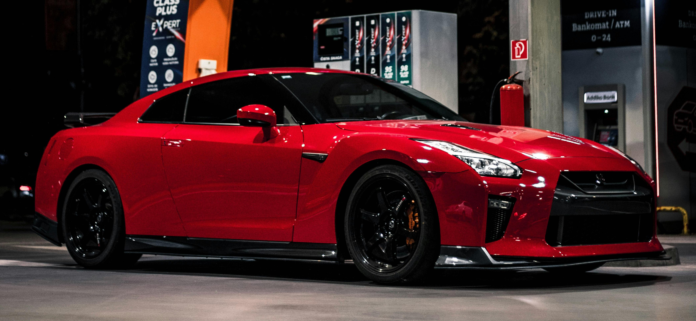
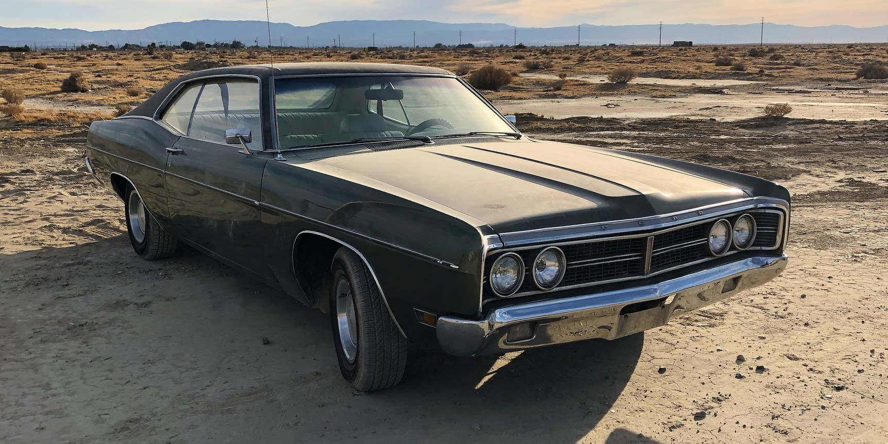

My Dream Car Collections
My Dream Car Collections The Koenigsegg Jesko is a world-class hypercar built in Sweden by Koenigsegg Automotive. It features a 5.0L twin-turbo V8 engine producing up to 1600 horsepower with E85 fuel, and a revolutionary multi-clutch transmission called the Light-Speed Transmission (LST). This car is engineered for extreme speed and handling, capable of reaching an expected maximum speed near 480 km/h, making it one of the fastest cars ever built.

The Nissan GTR R35, also known as "Godzilla", is a legendary Japanese performance machine. It features a hand-built 3.8L twin-turbo V6 engine, an intelligent AWD system, and incredible acceleration. With its advanced launch control and razor-sharp handling, the GTR competes with supercars that cost three times its price. It remains one of the most iconic JDM (Japanese Domestic Market) cars ever created.
The Lamborghini Urus combines the power of a supercar with the comfort of a luxury SUV. It has a 4.0L twin-turbo V8 producing 650 hp, making it one of the fastest SUVs in the world. Inside, it offers premium leather, advanced tech, and Lamborghini’s iconic Y-shaped design. The Urus is perfect for people who want both speed and practicality in one vehicle.
The 1970 Dodge Charger is one of the most iconic American muscle cars in history. With a massive 7.2L (440 Magnum) or even 7.0L HEMI V8, the Charger represents the golden age of muscle. It gained worldwide fame through the Fast & Furious movies as Dominic Toretto’s signature car. Known for its aggressive styling, hidden headlights, and deep V8 rumble, the Charger continues to be a timeless classic.
| Car Model | Performance | Category | |
|---|---|---|---|
| Top Speed | Horsepower | ||
| Koenigsegg Jesko | 480 km/h | 1600 hp | Hypercar |
| Nissan GTR R35 | 330 km/h | 565 hp | Sports Car |
| Lamborghini Urus | 305 km/h | 650 hp | Luxury SUV |
| 1970 Dodge Charger | 230 km/h | 425 hp | Muscle Car |